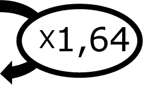

|
Chapitre 4
|
|
Partie 2
|
- Utiliser les propriétés de la proportionnalité
|
Linéarité :
Pour calculer une quatrième proportionnelle, on peut utiliser :
- L'addition de quantité (ou de colonne)
- La multiplication de quantité par un nombre non nul
Exemple :
Un robinet fuit et la quantité d'eau perdue est proportionnelle au temps qui passe :
| Temps (h) |
2 |
6 |
7 |
9 |
| Quantité d'eau (L) |
5 |
? |
17,5 |
? |
-
Pour obtenir la quantité d'eau perdu en 9h, on peut ajouter la quantité perdu en 2h et 7h (2 + 7 = 9) : $5 + 17,5 = 22,5 L$
-
La quantité d'eau perdue en 6h peut être obtenu en multipliant la quantité perdue en 2h par 3 (2 × 3 = 6) : $5\times3=15L$
Passage par l'unité :
Pour calculer une quatrième proportionnelle, on peut effectuer un passage par l'unité.
Exemple :
Le prix d'une quantité de pomme est proportionnel a la masse de pomme :
| Quantité de pomme (kg) |
2 |
1 |
5 |
| Prix (€) |
2,8 |
1,4 |
? |
Le prix de 5 kg de pomme peut-être obtenue en passant par le prix de 1kg (passage à l'unité).
1kg de pomme coûte $2,8 \div 2 = 1,40$€.
5kg de pomme coûte donc $1,40\times5=7$€
Coefficient de proportionnalité :
Pour calculer une quatrième proportionnelle, on peut calculer le coefficient de proportionnalité.
Exemple :
Le prix du carburant est proportionnel à son volume :
| Volume (L) |
18 |
53 |
| Prix (€) |
29,52 |
? |

Pour calculer le coefficient de proportionnalité, on divise une valeur de la ligne du bas par la quantité correspondante dans la ligne du haut.
Ici $29,52\div18 = 1,64$.
On peut alors trouver le prix de 53 L de carburant : $53\times1,64=86,92$€
Règle de trois :
Pour calculer une quatrième proportionnelle, on peut utiliser la règle de trois.
« On multiplie la diagonale et on divise par la troisième valeur. »
Exemple :
Les ingrédients d'une recettes sont proportionnels entre eux :
Farine (g)
Sucre (g)
625
925
350
?
Pour calculer, on utilise la règle de trois : $\frac{925\times 350}{625} = 518$
Pour 925 g de farine il faut donc 518 g de sucre.